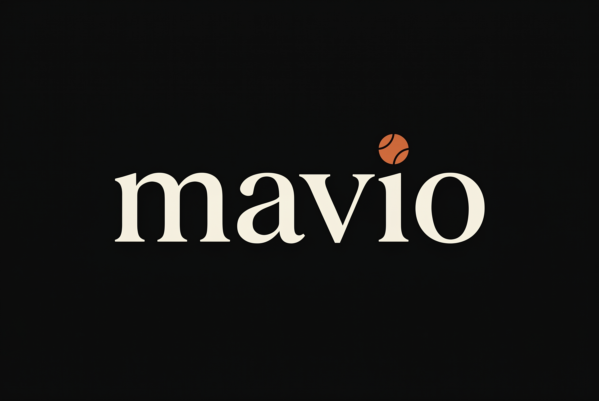
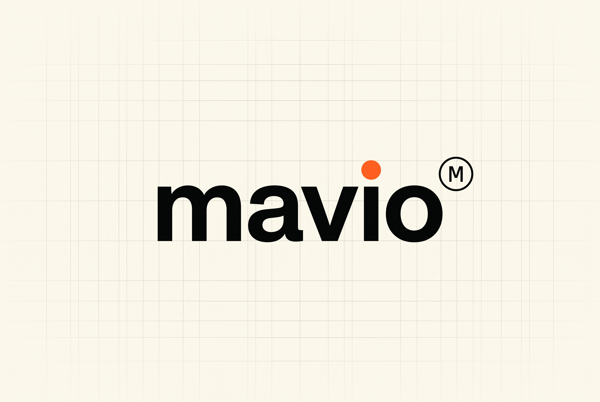
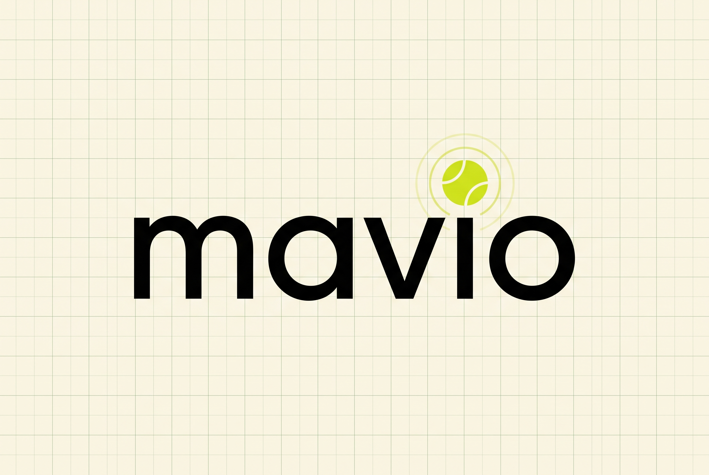
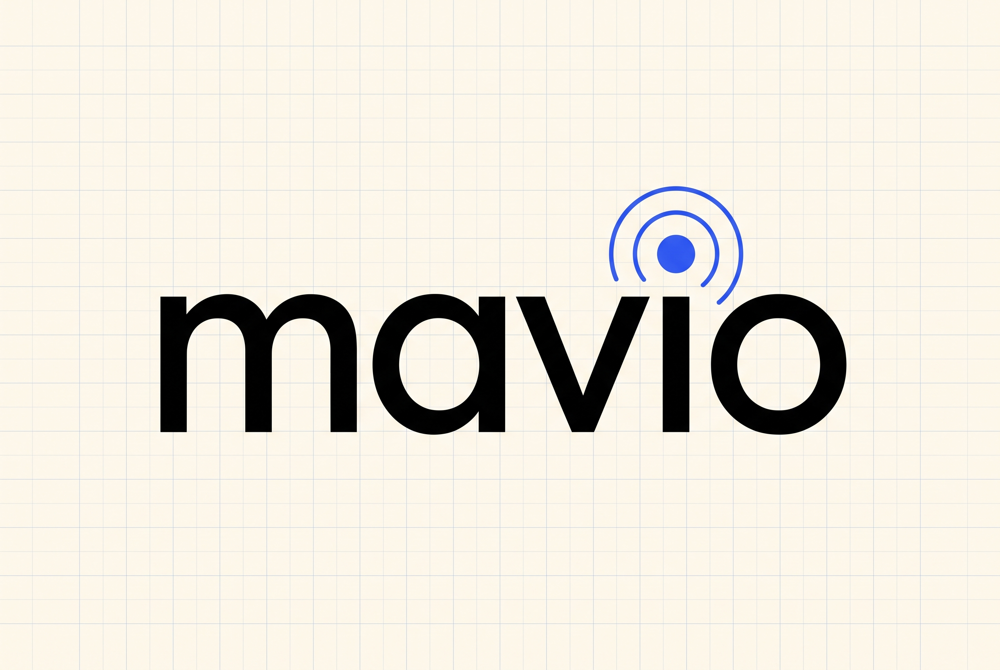

Three logo concepts for Mavio, all rendered via Nano Banana Pro at 2K. Pick one to anchor the brand and I'll vector it to spec for production.
SVG variations stripped from this round — they weren't translating cleanly from the NB renders. Vector versions get rebuilt to match exactly once a concept is locked.
Trace
The dot of the i is the ball — a clay-fired sphere with a subtle felt-seam, sitting precisely where the dot belongs. No floating arc, no decoration. The mark stands as a single confident word with one quiet detail that rewards close looking.

Spec
A precise mechanical wordmark with a single sport-orange dot — properly placed, properly sized, treated like a pilot light on engineered hardware. A small registered-symbol-style spec mark sits beside the wordmark as a deliberate technical signature.

Echo
Two takes on the AI-signal idea. The original treats the dot as a pure cobalt sensor pulse — pure tech-brand language. The current version fuses the pulse with a tennis-ball-green sphere, so the same mark reads as both a sensor that listens and a ball that's about to be served. Sport-aware without leaning on the literal felt-and-seams cliché.

